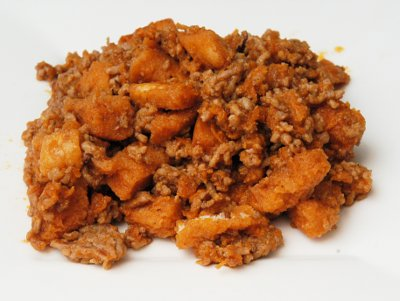

| Zutaten: | |
| 100 g | Hackfleisch |
| 1 El | Öl |
| 1 | Rüebli |
| 1.5 El | Salbei Zwiebel Würzmischung |
| 2 El | Ketchup |
Hackfleisch ein der Bratpfanne dünsten. Würzmischung beigeben und die geraffelte Karotte mitkochen. Ketchup nicht vergessen. 4 Esslöffel Wasser beigeben. 35 Minuten köcheln.
Mit einem Salat servieren.
Herbert Eigenmann, Code: SOM
Schmeckt fein. Ich verwendete aromatisierte Croûtons statt der Würzmischung die es hier nicht gibt. RE 12.5.2010
@LINKBACK_TAG@ @WAKELOCK@